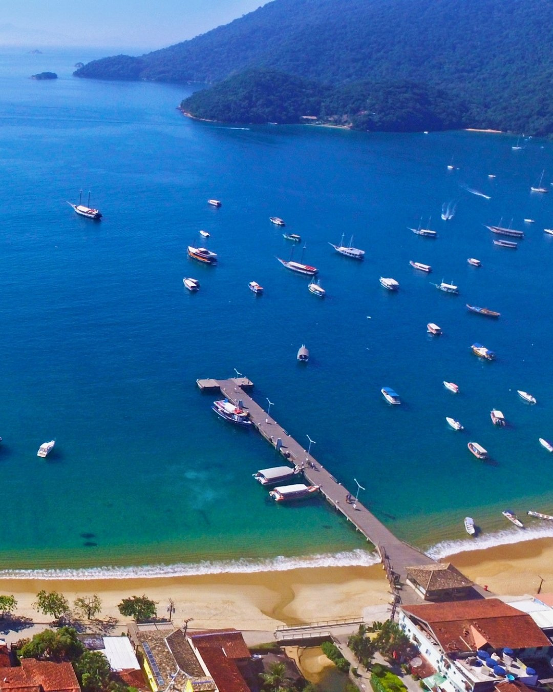

Melhor região para se hospedar na Ilha Grande

“Qual a melhor região para ficar na Ilha Grande?” é a pergunta que trava muita reserva. A ilha é grande e tem vários cantos lindos, mas — para a maioria dos viajantes — a resposta é direta: a Vila do Abraão. E, dentro dela, a parte baixa. Vamos explicar.
Vila do Abraão: a base que resolve tudo
O Abraão é o principal povoado da ilha e o ponto onde os barcos atracam. É lá que estão os restaurantes, mercados, farmácias e de onde saem quase todos os passeios e trilhas. Ficar na Vila significa ter tudo a pé e liberdade pra ir e voltar quando quiser, sem depender de horário de barco.
E as praias mais isoladas?
Lugares como Aventureiro, Araçatiba e Provetá são paraísos — mais vazios e rústicos. Mas têm pouca estrutura e exigem deslocamento de barco. Valem para quem já conhece a ilha e busca isolamento; para uma primeira viagem, ou para quem quer praticidade, a Vila ganha com folga.
Parte baixa x parte alta da Vila
Dentro do Abraão, a diferença que mais pesa é a altura:
- Parte baixa — colada ao cais, à praia e ao comércio. Você desce do barco e chega à pousada em poucos passos, no plano, sem carregar mala ladeira acima. É a área mais conveniente.
- Parte alta — mais afastada e às vezes mais silenciosa, mas com subidas e caminhada maior até o centrinho.
Se você prioriza praticidade — e ainda mais se viaja em família ou grupo — a parte baixa costuma valer muito a pena.
Como escolher dentro da região certa
Definida a região, o resto é olhar a pousada: café da manhã incluso, recepção 24h, gerador próprio e distância real até o cais e a praia. Esses detalhes decidem a qualidade da estadia mais do que a área em si — desde que você já esteja na Vila do Abraão.
Resumindo: Vila do Abraão para a maioria; parte baixa se você quer o cais, a praia e o comércio a poucos passos, sem ladeira.
Na parte baixa da Vila, coladinha ao cais.
A Pousada Paraíso fica na Rua Getúlio Vargas, na parte baixa do Abraão — a poucos passos da atracação, da praia e do comércio.
Reservar pelo WhatsApp ▸ Ver o mapa